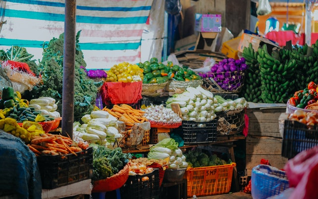

GhanaFarm Platform Is The Only Trusted Platform In Ghana. The Platform Provide The Oppotunity For Farmer To Sell Their Products Directly To Cumsumers In Ghana and Abroad.
Our Platform Is Tried And Tested By The Ghanain People And Those Living Abroad.
Our vegetables are naturally low in fat and calories. ... Vegetables are important sources of many nutrients, including potassium, dietary fiber, folate (folic acid), vitamin A, and vitamin C. Diets rich in potassium may help to maintain healthy blood pressure Leafy Greens. Leafy greens, such as spinach, kale, Swiss chard, collard and beet greens contain between 2.5–6.4 mg of iron per cooked cup, and 14–36% of the RDI. ... Tomato Paste. ... Potatoes. ... Mushrooms. ... Palm Hearts.
See Our VegitablesOur fruits are naturally low in fat, sodium, and calories. ... Fruits are sources of many essential nutrients that are under consumed, including potassium, dietary fiber, vitamin C, and folate (folic acid). Diets rich in potassium may help to maintain healthy blood pressure. Some healthiest fruits on earth. Grapefruit. Share on Pinterest. ... Pineapple. Among the tropical fruits, pineapple is a nutrition superstar. ... Avocado. Avocado is different from most other fruits. ... Blueberries. Blueberries have powerful health benefits. ... Apples. ... Pomegranate. ... Mango. ... Strawberries.
See Our FruitsOur Cereal & Grains are directory from farm, the seeds that come from grasses such as wheat, millet, rice, barley, oats, rye, triticale, sorghum, and maize (corn) They are also used as animal feed for the production of other foods, or, after major processing, as food ingredients or other products.
See Our Cereals & GrainsOur Livestock & Dariy are directory from farm, Our farm products are all under strictly high hygienic condition to provide a nutritious and desirable form of food for human consumption Meat, milk, eggs, bones, for a variety of uses.
See Our Livestock & DariyOur Plantation crops are cultivated on extensive scale like tea, coffee and rubber. Is that it typically had 500 to 1,000 acres (2.0 to 4.0 km2) or more of land and produced one or two cash crops for sale.
See Our PlantionWe have professionals engaged in agriculture, raising living organisms for food or raw materials. Our people who do some combination of raising field crops, orchards, vineyards, poultry, farm mechanization or other livestock ,etc.
See Our ServicesWho we are?
GhanaFarm is the first private platform that brings farmer and buyers in one place to sell or buy farm products.
What matters to us?
What matters to us is that we simply what to bring farmers and buyer together for them to do business.
What we do.
This is how we do it; the platform serves as an intermediary between the farmer and the buyer.
How we do it.
How we do it, the farmer need to create account from the platform and pays a subscriptions fee to post it products for sale.
Contact Form
Email Address: eba.cybersalert@gmail.com
Business Address:
Phone Number: +233 244 656 694 / 249 989 399
WhatsApp: +233 249 989 399